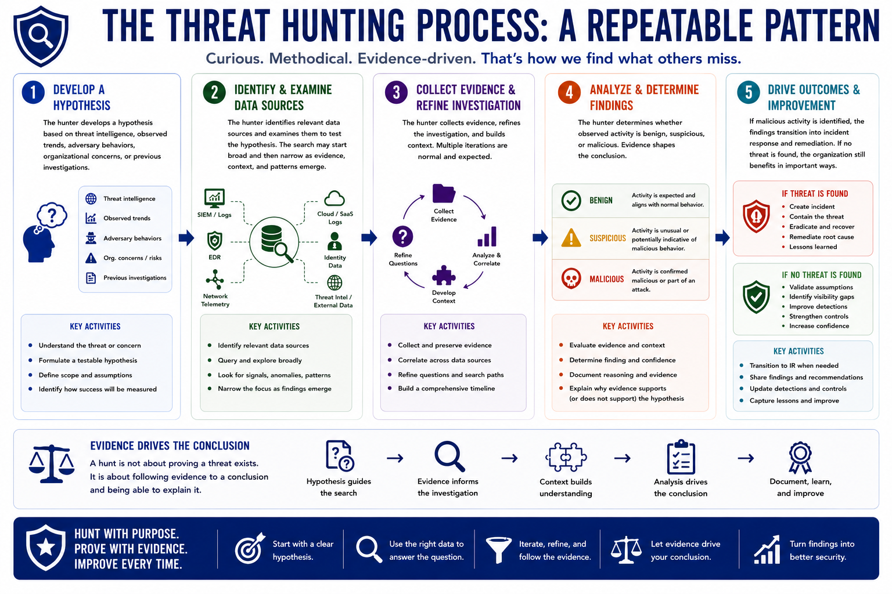

What is Threat Hunting?
The Hunt Process
Connecting to LMS... Progress: in progress
Version 1.0 | Introductory overview of defensive threat hunting practices.

Narration
Although approaches vary, many hunts follow a similar pattern. First, the hunter develops a hypothesis based on threat intelligence, observed trends, adversary behaviors, organizational concerns, or previous investigations.
Next, the hunter identifies relevant data sources and examines them to test the hypothesis. The search may start broad and then narrow as evidence, context, and patterns emerge.
The hunter collects evidence, refines the investigation, and determines whether observed activity is benign, suspicious, or malicious. Evidence shapes the conclusion. A hunt should be able to explain why the activity does or does not support the hypothesis.
If malicious activity is identified, the findings transition into incident response and remediation. If no threat is found, the organization still benefits by validating assumptions, identifying visibility gaps, and improving future detections.